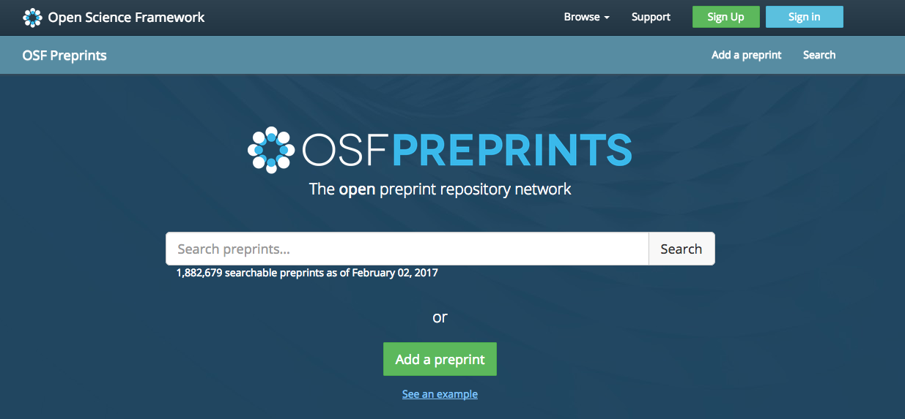
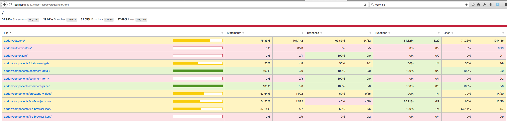

Addon goals
- Help build ember apps that use OSF functionality, fast
- Be usable by COS developers and external collaborators alike
- Highly (re)usable, flexible components that demonstrate best practices

How are we doing?
Inside COS we have started to use this for many projects
This is not easy to get started! We should learn from, and improve, the setup experience- can't
tell partners to "just copy the preprints repo".
Need to go beyond the "bundle of components" for a true project starter kit.
Pain Points I
We are actively working to fix some of the challenges:
"ember-osf": "git+https://github.com/CenterForOpenScience/ember-osf.git#ac254f87274044fb97d6a712efa5ff2433bd0537",
Pain Points II
Some challenges remain open items, and still require manual boilerplate to resolve. (especially
UI related assets that not everyone needs)
- Users need to manually install certain bower assets
- ...And manually import key files in various places
- Useful features aren't always well known; the docs have room to improve
A path forward
- Don't be shy about breaking out smaller packages. (But remember left-pad)
- Models (just talk to the server)
- Components (if you also need UI)
- Use automated addon mechanisms for importing code
- Know what's possible! https://ember-cli.com/api/
Batteries included
Don't just document all the steps- help people get started.
- Boilerplate: LICENSE, README, make the addon work
- Tools: Yarn, Sass, NVM, YUIDoc
- Best practices: Travis, linters, code coverage, Sentry. Gitignore your secrets and standardize your commands
- Nice pages: dynamic page titles, styling
- Demo tricky stuff: login, authenticated requests, (someday) pagination
- Push the envelope: Automatic accessibility testing
Thinking collectively
- Focus on shared problems and shared solutions
- Coordinate releases across repos
- Clear path to deprecation- don't remove stuff blindly
- Best practices: unit tests, docs, and code coverage
Code coverage: Knowing where to test
Ember encourages granular tests. Code coverage tells you which ones to write.
